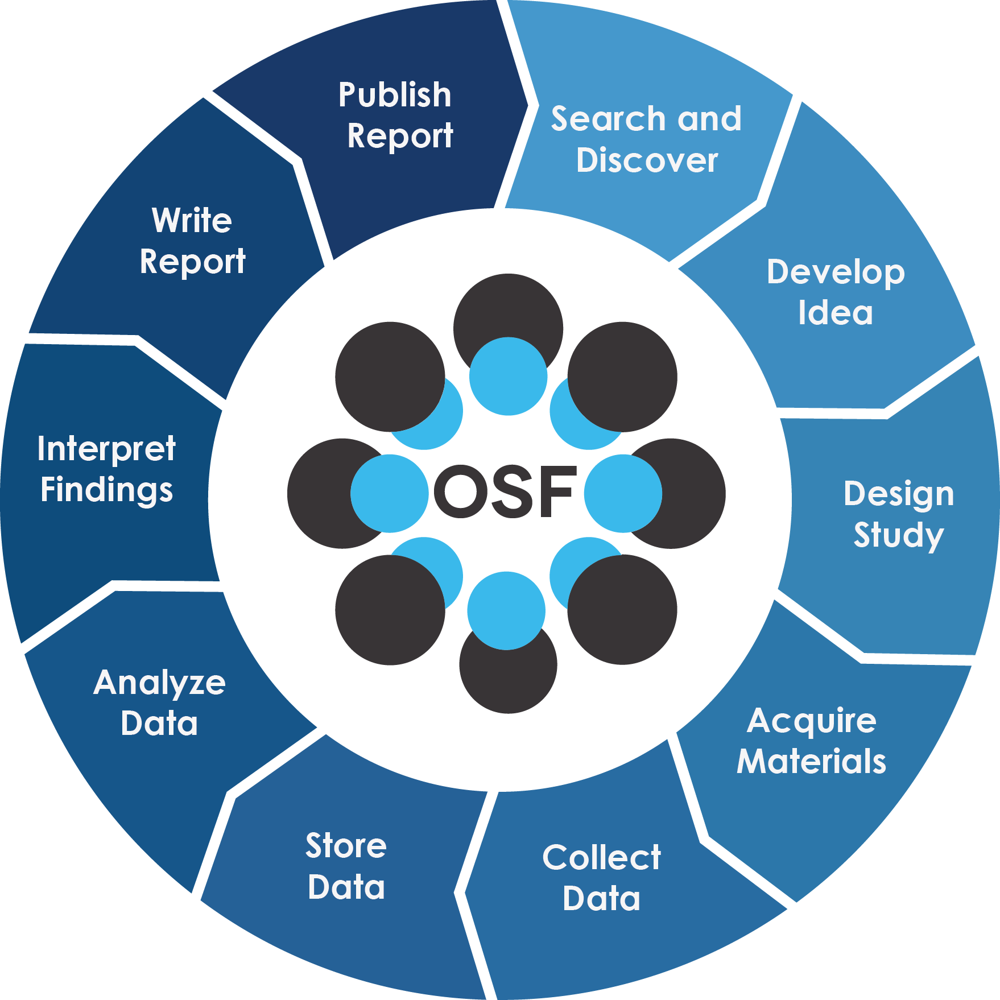
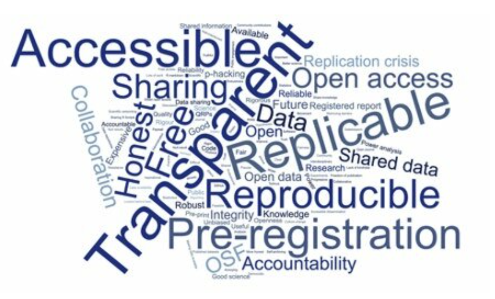
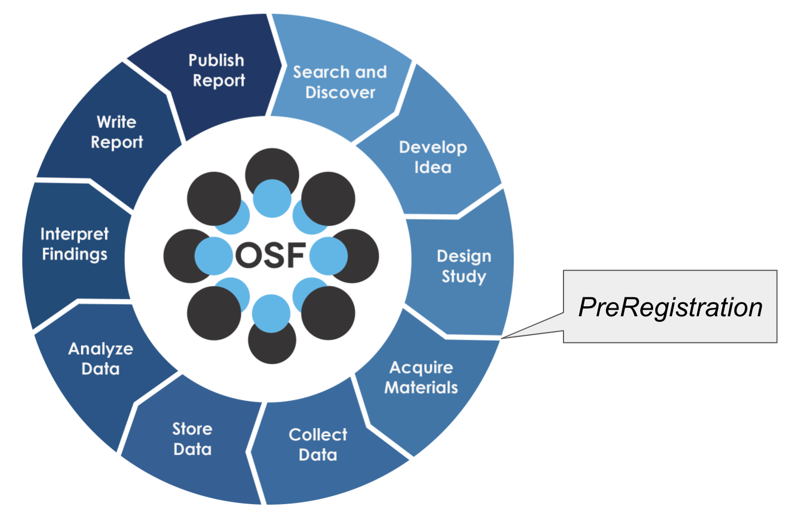
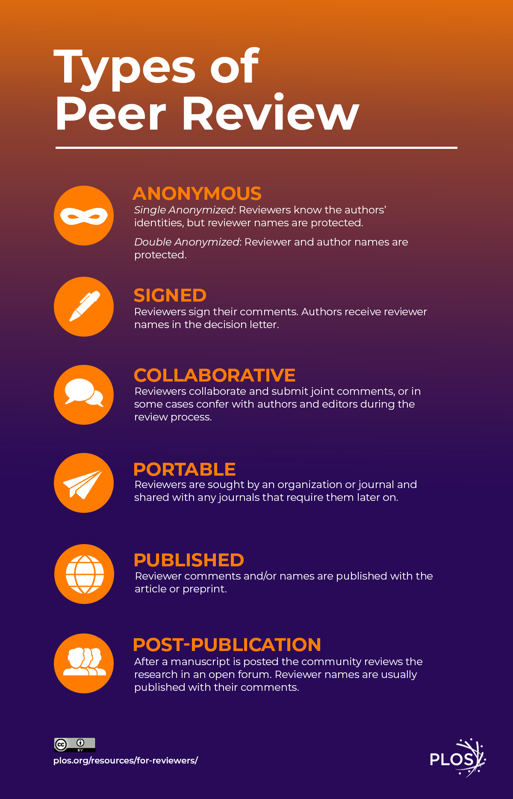
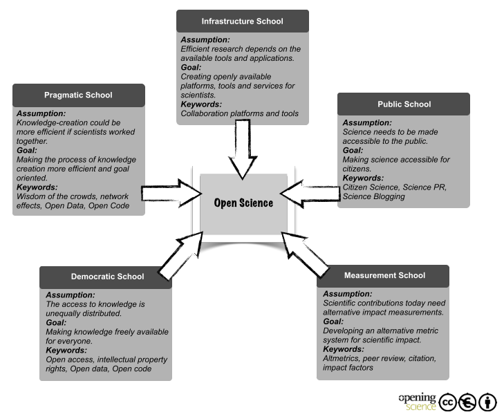

Introduction to Open Science¶
Learning Objectives
After this lesson, you should be able to:
- Explain what Open Science is
- Explain the components of Open Science
- Describe the behaviors of Open Science
- Explain why Open Science matters in education, research, and society
- Understand the advantages and the challenges to Open Science
What is Open Science?¶
"Open Science is transparent and accessible knowledge that is shared and developed through collaborative networks"
-Vincente-Saez & Martinez-Fuentes 2018
"Open Science is a collaborative and transparent approach to scientific research that emphasizes the accessibility, sharing, and reproducibility of data, methodologies, and findings to foster innovation and inclusivity"
-ChatGPT
"A series of reforms that interrogate every step in the research life cycle to make it more efficient, powerful and accountable in our emerging digital society".
-Jeffrey Gillan

Other Definitions
"Open Science is defined as an inclusive construct that combines various movements and practices aiming to make multilingual scientific knowledge openly available, accessible and reusable for everyone, to increase scientific collaborations and sharing of information for the benefits of science and society, and to open the processes of scientific knowledge creation, evaluation and communication to societal actors beyond the traditional scientific community." - UNESCO Definition
"Open Science is the movement to make scientific research (including publications, data, physical samples, and software) and its dissemination accessible to all levels of society, amateur or professional..." Wikipedia definition
Foundational Open Science Skills¶

1. Building a culture of scientists eager to share research materials - such as data, code, methods, documentation, and early results - with colleagues and society at large, in addition to traditional publications
2. Mastery of digital tools to create reproducible science that others can build upon
3. Understanding the push towards increased transparency and accountability for those practicing science (ie., compliance)
What is Open Science | The Royal Society
Governamental footprints: 2023 vs 2025
2023 was deemed the Year of Open Science, but recent changes at the administration level are seeing the approach to science being reshaped.
2023: the Year of Open Science
The White House, joined by 10 federal agencies, and a coalition of more than 85 universities, declared 2023 the Year of Open Science as a way to bring awareness to the benefits of Open Science and to steer the scientitic community towards its adoption.
In 2024, the first year of Open Science was celebrated in an effort to continue the promotion of the Open Science movement. The goals and activities around the White House's promotion of Open Science were centered around five key themes:
- Strengthening Open Science Policies
- Investing in Open Science Infrastructures
- Supporting the Research Community in Building Open Science Skills
- Engaging Communities to Broaden Participation in Open Science
- Promoting Incentives for Open Research Practices
Grant funding organizations such as the NIH, NASA and the US Department of Agriculture were prompt at sustaining the White House' vision by releasing Open Science policy guidelines across the board.
Reflections on a Year of Open Science: Initiatives and Achievements Realized and Where to Next
2025: Gold Standard Science
After the recent Presidential elections of late 2024, the White House deprecated or ended nearly all of the scientific policies of the previous administration. This includes the 2023 "Open Science" mandates.
Memorandums by OSTP director Michael Krastios and executive orders on "Gold Standard Science" retain language on the principles of Open Science, though critics argue political interference and scientific gate keeping may hinder what types of science is allowed to be funded under the current administration.
6 Pillars of Open Science¶
Open Access Publications |
Open Data |
Open Educational Resources |
Open Methodology |
Open Peer Review |
Open Source Software |
|---|---|---|---|---|---|
Open Access Publications
¶

Definition
"Open access is a publishing model for scholarly communication that makes research information available to readers at no cost, as opposed to the traditional subscription model in which readers have access to scholarly information by paying a subscription (usually via libraries)." -- OpenAccess.nl
Open Access Journal Examples
Major publishers have provided access points for publishing your work
Types of Publishing Business Models¶
-
Subscription model - the author pays a smaller fee (or no fee) for the article to be published. The publisher then sells subscription access to the article (usually to institutes of higher education).
-
Open Access model - The author pays a larger fee to make the article freely available to anyone through a Creative Commons license.
- Open Access publishing in Nature costs $12,290!
- Open Access publising in PlosOne costs $2,290
Research Article Versions¶
-
Preprint - In academic publishing, a preprint is a version of scholary paper that precedes formal peer-review and publication in a scientific journal. The preprint may be available, often as a non-typeset version available for free online.
Pre-print Services
- ASAPbio Pre-Print Server List - ASAPbio is a scientist-driven non-profit promoting transparency and innovation comprehensive list of pre-print servers inthe field of life science communication.
- ESSOar - Earth and Space Science Open Archive hosted by the American Geophysical Union.
- Peer Community In (PCI) a free recommendation process of scientific preprints based on peer reviews
- OSF.io Preprints are partnered with numerous projects under the "-rXivs"
The rXivs
- AfricArXiv
- AgrirXiv
- Arabixiv
- arXiv - is a free distribution service and an open-access archive for 2,086,431 scholarly articles in the fields of physics, mathematics, computer science, quantitative biology, quantitative finance, statistics, electrical engineering and systems science, and economics.
- BioHackrXiv
- BioRxiv - is an open access preprint repository for the biological sciences.
- BodorXiv
- EarthArXiv - is an open access preprint repository for the Earth sciences.
- EcsArXiv - a free preprint service for electrochemistry and solid state science and technology
- EdArXiv - for the education research community
- EngrXiv for the engineering community
- EvoEcoRxiv - is an open acccess preprint repository for Evolutionary and Ecological sciences.
- MediArXiv for Media, Film, & Communication Studies
- MedRxiv - is an open access preprint repository for Medical sciences.
- PaleorXiv - is an open access preprint repository for Paleo Sciences
- PsyrXiv - is an open access preprint repository for Psychological sciences.
- SocArXiv - is an open access preprint repository for Social sciences.
- SportrXiv - is an open access preprint for Sports sciences.
- ThesisCommons - open Theses
-
Author's accepted manuscript (AAM) - includes changes that came about during peer-review process. It is a non-typeset or formatted article. This often had an embargo period of 12-24 months
-
Published version of record (VOR) - includes stylistic edits, online & print formatting. This is the version that publishers claim ownership of with copyrights or exclusive licensing.
Copyrights and Science Publishing
Upon completion of a peer-reviewed science paper, the author typically 1. signs over the copyright of the paper to the publisher or 2. signs an exclusive license agreement with the publisher
For example authors that publish in Science retain their copyright but sign a 'license to pubish' agreement with AAAS
Elsevier requires authors to sign over copyright of the article but authors retains some rights of distribution
Open Data
¶
Definitions
“Open data and content can be freely used, modified, and shared by anyone for any purpose” - The Open Definition
"Open data is data that can be freely used, re-used and redistributed by anyone - subject only, at most, to the requirement to attribute and sharealike." - Open Data Handbook
Data are the foundation for any scientific endeavor. A lot of thought needs to go into how to best collect, store, analyze, curate, share, and archive data.

FAIR Principles¶
In 2016, the FAIR Guiding Principles for scientific data management and stewardship were published in Scientific Data.
Findable: Making data discoverable by the wider academic community and the public
Accessible: Using unique identifiers, metadata and a clear use of language and access protocols
Interoperable: Applying standards to encode and exchange data and metadata
Reusable: Enabling the repurposing of researach outputs to maximize their research potential
Reasons to Make your Data Open
- Unnecessary duplication. Duplication of research is costly for society, and places unnecessary burden on heavily researched people and populations.
- The data underlying publications are maintained and accessible, allowing for validation of results.
- Data openness leads to more collaboration and advances research and innovation.
- Your research is more visible and has greater impact. Publications which allow access to the underlying data get more citations. Greater visibility also allows for better validation and scrutiny of findings.
- Other researchers can cite your data, which will drive up your citation number and increase your influence in your field of research.
- Storing your data in a public repository also provides you with secure and ongoing storage that may otherwise not be available to you. -Foster Open Science
As Open as Possible, as Closed as Necessary¶
There are many circumstances where open data could be harmful:
-
Data on human health
-
Location of endangered species or archaeological sites
-
Data that individuals or groups do not want to be public
CARE Principles
The CARE Principles for Indigenous Data Governance were drafted at the International Data Week and Research Data Alliance Plenary co-hosted event "Indigenous Data Sovereignty Principles for the Governance of Indigenous Data Workshop," 8 November 2018, Gaborone, Botswana.
Collective Benefit
- C1. For inclusive development and innovation
- C2. For improved governance and citizen engagement
- C3. For equitable outcomes
Authority to Control
- A1. Recognizing rights and interests
- A2. Data for governance
- A3. Governance of data
Responsibility
- R1. For positive relationships
- R2. For expanding capability and capacity
- R3. For Indigenous languages and worldviews
Ethics
- E1. For minimizing harm and maximizing benefit
- E2. For justice
- E3. For future use
-
Data for making lethal weapons
Open vs. FAIR
FAIR does not demand that data be open: See one definition of open: http://opendefinition.org/
Open data does not necessarily mean it is FAIR
Additional Info
-
The Ethics of Geolocated Data from UK Statistics Authority
-
Health information US HIPAA
-
Indigenous data sovereignty: CARE Principles for Indigenous Data Governance , Global Indigenous Data Alliance (GIDA), First Nations OCAP® (Ownership Control Access and Possession), Circumpolar Inuit Protocols for Equitable and Ethical Engagement
Open Educational Resources
¶
Definitions
"Open Educational Resources (OER) are learning, teaching and research materials in any format and medium that reside in the public domain or are under copyright that have been released under an open license, that permit no-cost access, re-use, re-purpose, adaptation and redistribution by others." - UNESCO
Digital Literacy Organizations
- The Carpentries - teaches foundational coding and data science skills to researchers worldwide
- EdX - Massively Open Online Courses (not all open) hosted through University of California Berkeley
- EveryoneOn - mission is to unlock opportunity by connecting families in underserved communities to affordable internet service and computers, and delivering digital skills trainings
- Global Digital Literacy Council - has dedicated more than 15 years of hard work to the creation and maintenance of worldwide standards in digital literacy
- National Digital Equity Center a 501c3 non-profit, is a nationally recognized organization with a mission to close the digital divide across the United States
- National Digital Inclusion Allaince - advances digital equity by supporting community programs and equipping policymakers to act
- Net Literacy
- Open Educational Resources Commons
- Project Pythia is the education working group for Pangeo and is an educational resource for the entire geoscience community
- Research Bazaar - is a worldwide festival promoting the digital literacy emerging at the centre of modern research
- TechBoomers - is an education and discovery website that provides free tutorials of popular websites and Internet-based services in a manner that is accessible to older adults and other digital technology newcomers
Educational Materials
- Teach Together by Greg Wilson
- DigitalLearn
Open Methodology
¶
Definitions
"An open methodology is simply one which has been described in sufficient detail to allow other researchers to repeat the work and apply it elsewhere." - Watson (2015)
"Open Methodology refers to opening up methods that are used by researchers to achieve scientific results and making them publicly available." - Open Science Network Austria
Sharing Research Computer Code¶
Scientists around the globe are creating computer code for scientific analysis. These are valuable contributions that need to be shared!
Platforms like GitHub and GitLab are ideal for collaboratively developing code and sharing with the open internet. In FOSS, we will show you how to use Github for sharing code, documentation, hosting websites, and software version control.
Publishing Your Methods or Protocols¶
Platforms for Publishing Protocols & Bench Techniques
- BioProtocol
- Current Protocols
- Gold Biotechnology Protocol list
- JoVE - Journal of Visualized Experiments
- Nature Protocols
- OpenWetWare
- Protocol Exchange
- Protocols Online
- Protocols
- SciGene
- Springer Nature Experiments
PreRegistration¶
Preregistration is detailing your research and analysis plan and submitting it to an online registry before you engage in the research.

Why Do This?
Preregistration makes your process more open and records the difference between your initial research plan what you end up actually doing.
Preregistration separates hypothesis-generating (exploratory) from hypothesis-testing (confirmatory) research. Both are important. But the same data cannot be used to generate and test a hypothesis, which can happen unintentionally and reduce the credibility of your results.
It also helps us avoid practices like p-hacking or Hypothesizing After the Results are Known(HARKing).
Additional Info
Read this publication by Nosek et al. 2018
Open Science Framework Preregistration https://www.cos.io/initiatives/prereg
Open Peer Review
¶
Definitions
Open peer review is an umbrella term for a number of overlapping ways that peer review models can be adapted in line with the aims of Open Science, including making reviewer and author identities open, publishing review reports and enabling greater participation in the peer review process.
Traditional Closed Peer-Review System¶
- Throughout and after the process, the author remains unaware of the reviewers' identities, while the reviewers know the identity of the authors.
- All communications between authors, reviewers and editors remains private
Complaints with the Traditional Closed Peer-Review System¶
- Unreliable and Inconsistent
- Delays and Expense
- Lack of Accountability and Risks of Subversion
- Social and Publication Biases
- Lack of Incentives
Open Peer-Review Ideas¶

Defenders of the Traditional Peer-Review System
Example Open Peer-Review Systems
F1000Research An open research publishing platform that offers open peer review and rapid publication. The article from Ross-Hellauer et al. (2017) has open peer-reviews.
Open Source Software
¶

Definitions
"Open source software is code that is designed to be publicly accessible—anyone can see, modify, and distribute the code as they see fit. Open source software is developed in a decentralized and collaborative way, relying on peer review and community production." - Red Hat
Research science (and also many companies) rely on open source software to operate
Open Source Software
- Linux operating system and shell
- Python
- R
- git
- Conda
- Docker
- Cyverse
- Pytorch
- Tyson's Awesome List
When you create a new software, library, or package, you become its parent and guardian.

WHY do Open Science?¶
A paper from Bartling & Friesike (2014) posits that there are 5 main schools of thought in Open Science, which represent 5 underlying motivations:
- Democratic school: primarily concerned with making scholarly work freely available to everyone
- Pragmatic school: primarily concerned with improving the quality of scholarly work by fostering collaboration and improving critiques
- Infrastructure school: primarily focused on the platforms, tools, and services necessary to conduct efficient research, collaboration, and communication
- Public school: primarily concerned with societal impact of scholarly work, focusing on engagement with broader public via citizen science, understandable scientific communication, and less formal communication
- Measurement school: primarily concerned with the existing focus on journal publications as a means of measuring scholarly output, and focused on developing alternative measurements of scientific impact

We have added another school of thought
- Compliance school: government, universities, and granting agencies have embraced Open Science and are mandating some elements (e.g., data sharing with publications)
Discussion Questions¶
Which of the pillars of Open Science is nearest to your own heart?
Open Access Publications
Open Data
Open Educational Resources
Open Methodology
Open Peer Review
Open Source Software
Are any of the pillars more important than the others?
Are there any pillars not identified that you think should be considered?
What characteristics might a paper, project, lab group require to qualify as doing Open Science
What are some barriers to you, your lab group, or your domain doing Open Science?
What motivates you to do Open Science?
Do you feel that you fall into a particular "school"? If so, which one, and why?
Are there any motivating factors for doing Open Science that don't fit into this framework?
Recommended Open Science Communities¶


Open Scholarship Grassroots Community Networks
International Open Science Networks
- Center for Scientific Collaboration and Community Engagement (CSCCE)
- Center for Open Science (COS)
- Eclipse Science Working Group
- eLife
- NumFocus
- Open Access Working Group
- Open Research Funders Group
- Open Science Foundation
- pyOpenSci
- R OpenSci
- Research Data Alliance (RDA)
- The Turing Way
- UNESCO Global Open Science Partnership
- World Wide Web Consortium (W3C)
US-based Open Science Networks
- CI Compass - provides expertise and active support to cyberinfrastructure practitioners at USA NSF Major Facilities in order to accelerate the data lifecycle and ensure the integrity and effectiveness of the cyberinfrastructure upon which research and discovery depend.
- Earth Science Information Partners (ESIP) Federation - is a 501©(3) nonprofit supported by NASA, NOAA, USGS and 130+ member organizations.
- Internet2 - is a community providing cloud solutions, research support, and services tailored for Research and Education.
- Minority Serving Cyberinfrastructure Consortium (MS-CC) envisions a transformational partnership to promote advanced cyberinfrastructure (CI) capabilities on the campuses of Historically Black Colleges and Universities (HBCUs), Hispanic-Serving Institutions (HSIs), Tribal Colleges and Universities (TCUs), and other Minority Serving Institutions (MSIs).
- OpenScapes - is an approach for doing better science for future us
- The Quilt - non-profit regional research and education networks collaborate to develop, deploy and operate advanced cyberinfrastructure that enables innovation in research and education.
Oceania Open Science Networks
- New Zealand Open Research Network - New Zealand Open Research Network (NZORN) is a collection of researchers and research-associated workers in New Zealand.
- Australia & New Zealand Open Research Network - ANZORN is a network of local networks distributed without Australia and New Zealand.
Self Assessment¶
True or False: All research papers published in the top journals, like Science and Nature, are always Open Access?
False
Major Research journals like Science and Nature have an "Open Access" option when a manuscript is accepted, but they charge an extra fee to the authors to make those papers Open Access.
These high page costs are exclusionary to the majority of global scientists who cannot afford to front these costs out of pocket.
This will soon change, at least in the United States. The Executive Branch of the federal government recently mandated that future federally funded research be made Open Access after 2026.
True or False: an article states all of the research data used in the experiments "are available upon request from the corresponding author(s)," meaning the data are "Open"
False
In order for research to be open, the data need to be freely available from a digital repository, like Data Dryad, Zenodo.org, or CyVerse.
Data that are 'available upon request' do not meet the FAIR data principles.
Using a version control system to host the analysis code and computational notebooks, and including these in your Methods section or Supplementary Materials, is an example of an Open Methodology?
Yes!
Using a VCS like GitHub or GitLab is a great step towards making your research more reproducible.
Ways to improve your open methology can include documentation of your physical bench work, and even video recordings and step-by-step guides for every part of your project.
You are asked to review a paper for an important journal in your field. The editor asks if you're willing to release your identity to the authors, thereby "signing" your review. Is this an example of "Open Peer Review"?
Maybe
There are many opinions on what 'open-review' should consist of. A reviewer signing their review and releasing their identity to the authors is a step toward a more open process. However, it is far less open than publishing the peer-review reports online next to the final published paper.
You read a paper where the author(s) wrote their own code and licensed as "Open Source" software for a specific set of scientific tasks which you want to replicate. When you visit their personal website, you find the GitHub repository does not exist (because its now private). You contact the authors asking for access, but they refuse to share it 'due to competing researchers who are seeking to steal their intellectual property". Is the software open source?
No
Just because an author states they have given their software a permissive software license, does not make the software open source.
Always make certain there is a LICENSE associated with any software you find on the internet.
In order for the software to be open, it must follow the Open Source Initiative definition